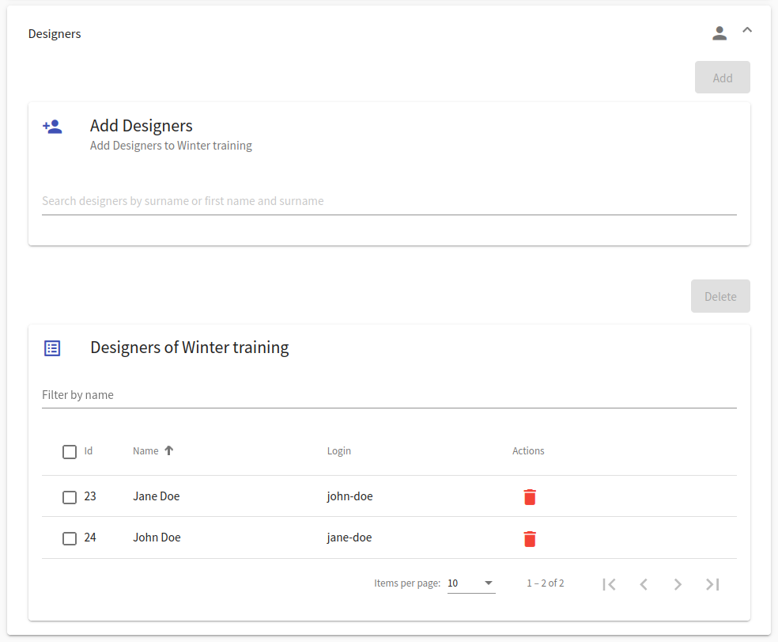
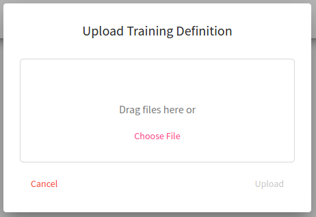

Adaptive Training Definition
Adaptive Training Definition Overview#
This page lists all adaptive definitions available to the instructor (the instructors can see only the ones that they create or the ones that they are co-authors). In the top right corner are located buttons  and
and  that are used to add a new definition into the CyberRangeCZ Platform portal. In the following table, each row represents one adaptive training definition. The last column of this table contains actions / that can be executed on a given training definition. By clicking the name of the adaptive training definition, the instructor will be redirected to the detail page of the training definition.
that are used to add a new definition into the CyberRangeCZ Platform portal. In the following table, each row represents one adaptive training definition. The last column of this table contains actions / that can be executed on a given training definition. By clicking the name of the adaptive training definition, the instructor will be redirected to the detail page of the training definition.
Info
Users with the role ROLE_ADAPTIVE_TRAINING_ADMINISTRATOR can see all of the training definitions.
Edit
Click the button, and the training definition editor page will be opened:

Here the instructor can use given panels to edit a training definition in the same fashion as creating a new definition. Every change needs to be saved with the  button.
button.
Info
The instructor can only save changes made in the training definition that is Unreleased. Released and Archived definitions cannot be changed.
Delete
Click the button, and the following confirmation window will be opened:

After confirming, the given training definition will be deleted from the CyberRangeCZ Platform portal.
Info
Training definitions used in any training instance cannot be deleted.
Clone
Click the button, and the following window will be opened:

Here the instructor can change the name of the new training definition that will be added to the CyberRangeCZ Platform portal. The contents of this new definition will be identical to the original training definition.
Download
Click the button to export the respective training definition as a file in JSON format that can be downloaded into the local machine. This file can be used to upload a given definition back into the CyberRangeCZ Platform portal.
Release
Click the button to change the definition state to Released.
Released definitions cannot change their content, but their state can be changed to either Unreleased or Archived.
Unrelease
Click the button to change the definition state to Unreleased.
Unreleased definitions allow the instructor to edit the content inside them and change its state to Released.
Archive
Click the button to change the definition state from Released to Archived.
Archived definitions cannot change their Archived state and can no longer be modified.
Add a New Definition#
There are three approaches on how to creating a new training definition.
- Create a new definition from scratch.
- Upload a definition from a JSON file.
- The last approach is to clone an already existing definition. More about this it is written in the previous subsection).
1. Create a New Definition#
To create a new training definition, click on the top right button . It will open the training definition editor page.
Create Adaptive Training Definition Panel#
In the first panel of the training definition editor, the instructor can edit fields that describe the new definition. When the instructor is done, they can either click on button that will create a new definition and redirect them to the edit page for training definition. It will allow the instructor to edit designers and phases of the definition.

Phases Panel#
This panel is part of the Create Adaptive Training Definition Panel, where the instructor can add, delete, and edit phases of the training definition.
To add a new phase, the instructor can click  that will roll down a menu in which the instructor can choose a type of the new phase:
that will roll down a menu in which the instructor can choose a type of the new phase:
Each change that has been made inside a phase (except create, copy, delete and move task) must be saved with the button at the top of Create Adaptive Training Definition Panel.
Tip
To change the order of phases, use the drag-and-drop mechanism. Select a phase in the phase bar by “grabbing” it and dragging it to a different position.
I. Training Phase#
At the training phase, a trainee gets assigned with one of the provided task variants based on their performance. Trainees can access a virtual network inside the sandbox to find a solution to the assignment. The instructor can fill this form to specify details of the new phase.
Decision Matrix contains weights for five monitored metrics (questionnaire answers, completed in time, the keyword used, solution displayed, and submitted answers). The matrix is used to add relationships between phases and their metrics. For instance, consider training with six phases where the third phase deepens the topic exercised in the first phase. In this case, we set the weights in the third matrix so that the selected weights for the metrics from the first phase are non-zero. The other performance metrics with weights set to zero are ignored. The weights have to be manually set by the instructor since each training is unique.
Further, based on the decision matrix and participants’ performance, a suitable task is computed and assigned to the participant during the adaptive training run.

Under the training phase editing form, there is an additional Tasks panel that the instructor can use to create, delete, and edit task variants associated with a given training phase.
A new task can be added with the button and edited with the following form. New tasks can also be created by copying the content of the selected task by using the  button. To change the order of tasks, use the drag-and-drop mechanism.
button. To change the order of tasks, use the drag-and-drop mechanism.
Under the related questions panel, there is a MITRE ATT&CK Techniques panel that the instructor can use to add techniques associated with a given training phase.
Under the MITRE ATT&CK techniques panel is a Expected Commands panel that the instructor can use to add commands which should be used to solve a given training phase.
In the Edit mode of the adaptive definition, it is also possible to simulate the performance of a single trainee. This option is of great use for the instructor. According to this simulated performance, the instructor can verify that the weights of the decision matrix are set up correctly. Simulating the performance of different trainees can be vital for creating a definition that suits the various range of trainees.
II. Adaptive Questionnaire Phase#
In the adaptive questionnaire phase, the trainees answer a list of questions. Questions of the adaptive questionnaire can be further linked to training phases (links affect the Questionnaire Answered aspect of the Decision Matrix). Content of this phase can be edited with the following form:
Under the title field, there is a Questions panel to create, delete and, edit questions associated with the given adaptive questionnaire phase:

A new question can be added with the  button that will roll down the menu where the instructor can choose a type of the new question:
button that will roll down the menu where the instructor can choose a type of the new question:
Each type has its specific editing form.
Under the Questions panel, there is a Question-Phase Relations panel used to create relations between the question sets and training phases:
A new relation can be added with the  button that will roll down the menu where the instructor can choose one of the training phases from the same training definition:
button that will roll down the menu where the instructor can choose one of the training phases from the same training definition:
Relations can be further edited using the following form:
Note
Only saved questions can be added to the relation.
III. General Questionnaire Phase#
In the general questionnaire phase, the trainees answer a list of questions in the same way as in the adaptive questionnaire phase. The difference is that the general questionnaire phase does not contain the question-phase relations, and its questions cannot have correct answers predefined. Instructors can edit this phase in the following form:
Under the title field, there is a Questions panel to create, delete and, edit questions associated with the given general questionnaire phase:
A new question can be added with the button that will roll down the menu where the instructor can choose a type of the new question:
Each type has its specific editing form.
IV. Info Phase#
In the info phase, the trainees read the content of the information written by the instructor in the following form:
V. Access Phase#
In the access phase, a trainee is provided with necessary information on how to access either cloud or local sandbox. Either cloud or local content is displayed during a training run based on the selected environment in a training instance. In local content, the special variables can be used. These variables are then replaced by an actual values when the content is displayed to trainee. A trainee must submit a passkey to proceed to next phase. Passkey can be provided to trainees by an instructor or can be mentioned in the content itself.
Designers Panel#
In the second panel of the training definition editor, the instructor can add and remove designers from the definition.

2. Upload a Definition From JSON File#
To upload a training definition, on the page Adaptive Training Definition Overview, click on the button on the top right corner. It will open the following window:

Upload training definition that has been downloaded as a file in JSON format. This usecase is useful when the instructor wants to re-use the training definition stored in the past. Try downloading and uploading an example training definition prepared by our team.
Adaptive Training Definition Detail#
This page provides detail of the selected adaptive training definition in two panels. The first panel provides elementary information regarding the number of phases, when it was last edited, its estimated duration, whether the option to display stepper was selected and its current state. Any other Instructor notes or Learning outcomes are present in the expandable Notes section upon clicking on button . On the other hand, the second panel describes definition phases in detail. Detail for a particular phase may vary based on its type and can be opened by clicking the expand button (next to the phase name). The detail page provides an option to expand or collapse these detail for all phases at once.
Info phase detail contains only the content of the phase. However, the Adaptive questionnaire phase detail displays the number of questions and their content and correct answers.

The general questionnaire phase detail displays the number of questions and their content and choices.
Training phase detail sums all necessary information about the phase together with the content of all its tasks and solution.